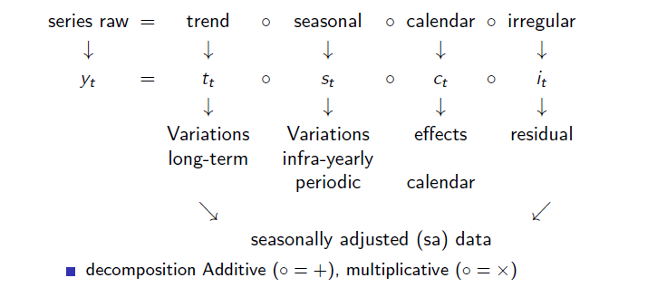

# Create a calendar with rjd3toolkit
# Define a national calendar
frenchCalendar <- national_calendar(days = list(
fixed_day(7, 14), # Bastille Day
fixed_day(5, 8, validity = list(start = "1982-05-08")), # Victory Day
special_day("NEWYEAR"),
special_day("CHRISTMAS"),
special_day("MAYDAY"),
special_day("EASTERMONDAY"),
special_day("ASCENSION"),
special_day("WHITMONDAY"),
special_day("ASSUMPTION"),
special_day("ALLSAINTSDAY"),
special_day("ARMISTICE")
))
# Generrate calendar regressors
q <- holidays(
calendar = frenchCalendar,
start = "1968-01-01",
length = length(df_daily$births),
type = "All",
nonworking = 7L
)
# Argument type = All : taking all holidays into account
# Argument type = Skip : taking into account only the holidays falling on a week daySA of high-frequency data
In this chapter
The sections below provide guidance on seasonal adjustment of infra-monthly, or high-frequency (HF), time-series data with JDemetra+ tailored algorithms.
Currently available topics:
description of HF data specificities
R functions for pre-treatment, extended X-11 and extended Seats
Up coming content:
graphical user interface 3.0 functionalities for HF data
STL functions
State space framework
Data specificities
HF data often display multiple seasonal patterns with potentially non-integer periodicities which cannot be modeled with classical SA algorithms. JD+ provides tailored versions of these algorithms.
| Data | Day | Week | Month | Quarter | Year |
|---|---|---|---|---|---|
| quarterly | 4 | ||||
| monthly | 3 | 12 | |||
| weekly | 4.3481 | 13.0443 | 52.1775 | ||
| daily | 7 | 30.4368 | 91.3106 | 365.2425 | |
| hourly | 24 | 168 | 730.485 | 2191.4550 | 8765.82 |
Tailored algorithms in JDemetra+
| Col1 | Algorithm | GUI v 3.0 | R package |
|---|---|---|---|
| Pre-treatment | Extended Airline Model | ✔️ | rjd3highfreq |
| Decomposition | Extended SEATS Extended Airline Model | ✔️ | rjd3highfreq |
| Extended X-11 | ✔️ | rjd3x11plus | |
| Extended STL | ✖ | rjd3stl | |
| One-Step | SSF Framework | ✖ | rjd3sts |
Unobserved Components
Raw series decomposition

Multiple seasonal patterns
HF data often contain multiple seasonal patterns. For example, daily economic time series often display strong infra-weekly and infra-yearly seasonality. An infra-monthly seasonal pattern may also be present, but its strength is usually less pronounced in practice. In theory, the full decomposition of the seasonal component in daily data is given by:
\[ S_{t}= S_{t,7} \circ S_{t,30.44} \circ S_{t,365.25} \]
The decomposition is done iteratively periodicity by periodicity starting with the smallest one (highest frequency) as:
highest frequencies usually display the biggest and most stable variations
cycles of highest frequencies can mix up with lower ones
Identifying seasonal patterns
JDemetra+ provides the Canova-Hansen test in the rjd3toolkit package.
Pre-adjustment
In classical X13-ARIMA and TRAMO-SEATS, a pre-adjustment step is performed to remove deterministic effects, such as outliers and calendar effects, with a Reg-Arima model. In the extended version for HF data, it is also the case with an extended Airline model.
A general Reg-ARIMA model is written as follows:
\[ \left(Y_t - \sum {\alpha_i}X_{it}\right) \sim ARIMA(p,d,q)(P,D,Q) \]
These models contain seasonal backshift operators \(B^{s}(y_t)=y_{t-s}\). Here \(s\) can be non-integer. JDemetra+ will rely on a modified version of a frequently used Arima model: the “Airline” model:
\[ (1-B)(1-B^{s})y_t=(1-\theta_1 B)(1-\theta_2 B^{s}) \epsilon_t \text{~~~~} \epsilon_t \sim \text{NID}(0,\sigma^2_{\epsilon}) \]
For HF data, the potentially non-integer periodicity \(s\) will be written: \(s=s' + \alpha\), with \(\alpha \in [0,1)\) (for example \(52.18 = 52 +0.18\) is the yearly periodicity for weekly data)
Taylor series development around \(1\) of \(f(x)=x^\alpha\)
\[ \begin{array}{lll} x^\alpha &=& 1 + \alpha (x-1) + \frac{\alpha (\alpha+1)}{2!} (x-1)^2 + \frac{\alpha (\alpha+1) (\alpha+2)}{3!} (x-1)^3 +\cdots \\ B^\alpha &\cong& (1 - \alpha)+ \alpha B \end{array} \]
Approximation of \(B^{s+\alpha}\) in an extended Airline model
\[ \begin{array}{lll} B^{s+\alpha} &\cong& (1 - \alpha)B^s+ \alpha B^{s+1} \end{array} \]
Example for a daily series displaying infra-weekly (\(p_{1}=7\)) and infra-yearly (\(p_{2}=365.25\)) seasonality:
\[ (1-B)(1-B^{7})(1-B^{365.25)}(Y_t - \sum {\alpha_i}X_{it})=(1-\theta_1 B)(1-\theta_2 B^{7})(1-\theta_3 B^{365.25}) \epsilon_t \]
\[ \epsilon_t \overset{iid}{\sim} \text{N}(0,\sigma^2_{\epsilon}) \]
with
\[ 1 - B^{365.25} = 1 - (0.75B^{365} + 0.25B^{366}) \]
Calendar correction
Calendar regressors can be defined with the rjd3toolkit package and added to pre-treatment function as a matrix.
Outliers and intervention variables
Outliers detection is available in the pre-treatment function. Detected outliers are AO, LS and WO. Critical value can be computed by the algorithm or user-defined.
Linearization
Example using rjd3highfreq::fractionalAirlineEstimation function:
pre_adjustment <- rjd3highfreq::fractionalAirlineEstimation(y_raw,
x = q, # q = daily calendar regressors
periods = c(7, 365.25),
ndiff = 2, ar = FALSE, mean = FALSE,
outliers = c("ao", "ls", "wo"),
criticalValue = 0, # computed in the algorithm
precision = 1e-9, approximateHessian = TRUE
)“pre_adjustment” R object is a list of lists in which the user can retrieve input series, parameters and output series. For more details see chapter on R packages and rjd3highfreq help pages R, where all parameters are listed.
Decomposition
Extended X-11
X-11 is the decomposition module of X-13-Arima, the linearized series from the pre-adjustment step is split into seasonal (\(S\)), trend (\(T\)) and irregular (\(I\)) components. In case of multiple periodicities the decomposition is done periodicity by periodicity starting with the smallest one. Global structure of the iterations is the same as in “classical” X-11 but modifications were introduced for tackling non-integer periodicities. They rely on the Taylor approximation for the seasonal backshift operator:
\[ \begin{array}{lll} B^{s+\alpha} &\cong& (1 - \alpha)B^s+ \alpha B^{s+1} \end{array} \]
Modification of the first trend filter for removing seasonality
The first trend estimation is thanks to a generalization of the centred and symmetrical moving averages with an order equal to the periodicity \(p\).
filter length \(l\): smallest odd integer greater than \(p\)
examples: \(p=7 \rightarrow l=7\), \(p=12 \rightarrow l=13\), \(p=365.25 \rightarrow l=367\), \(p=52.18 \rightarrow l=53\)
central coefficients \(1/p\) (1/12,1/7, 1/365.25)
end-point coefficients \(\mathbb{I} \{\text{$E(p)$ even}\} +(p-E(p)) /2p\)
example for \(p=12\): (\(1/12\) and \(1/24\)) (we fall back on \(M_{2\times12}\) of the monthly case
example for \(p=365.25\): (\(1/365.25\) and \(0.25/(2*365.25)\))
Modification of seasonality extraction filters
Computation is done on a given period
Example \(M_{3\times3}\)
\[ M_{3\times3}X = \frac{1}{9}(X_{t-2p})+\frac{2}{9}(X_{t-p})+\frac{3}{9}(X_{t})+\frac{2}{9}(X_{t+p})+\frac{1}{9}(X_{t+2p}) \]
if \(p\) integer: no changes needed
if \(p\) non-integer: Taylor approximation of the backshift operator
Modification of final trend estimation filter
As seasonality has been removed in the first step, there is no non-integer periodicity issue in the final trend estimation, but extended X-11 offers additional features vs classic X-11, in which final trend is estimated with Henderson filters and Musgrave asymmetrical surrogates. In extended X-11, a generalization of this method with local polynomial approximation is available.
Example of decomposition
Here the raw series is daily and displays two periodicities \(p=7\) and \(p=365.25\)
# extraction of day-of-the-week pattern (dow)
x11.dow <- rjd3x11plus::x11plus(y_linearized,
period = 7, # DOW pattern
mul = TRUE,
trend.horizon = 9, # 1/2 Filter length : not too long vs p
trend.degree = 3, # Polynomial degree
trend.kernel = "Henderson", # Kernel function
trend.asymmetric = "CutAndNormalize", # Truncation method
seas.s0 = "S3X9", seas.s1 = "S3X9", # Seasonal filters
extreme.lsig = 1.5, extreme.usig = 2.5
) # Sigma-limits
# extraction of day-of-the-week pattern (doy)
x11.doy <- rjd3x11plus::x11plus(x11.dow$decomposition$sa, # previous sa
period = 365.2425, # DOY pattern
mul = TRUE,
trend.horizon = 371, # 1/2 final filter length
trend.degree = 3,
trend.kernel = "Henderson",
trend.asymmetric = "CutAndNormalize",
seas.s0 = "S3X15", seas.s1 = "S3X5",
extreme.lsig = 1.5, extreme.usig = 2.5
)Arima Model Based (AMB) Decomposition (Extended Seats)
Example
# extracting DOY pattern
amb.doy <- rjd3highfreq::fractionalAirlineDecomposition(
amb.dow$decomposition$sa, # DOW-adjusted linearised data
period = 365.2425, # DOY pattern
sn = FALSE, # Signal (SA)-noise decomposition
stde = FALSE, # Calculate standard deviations
nbcasts = 0, nfcasts = 0
) # Numbers of back- and forecastsSummary of the process
For the time being, seasonal adjustment processing in rjd3highfreq cannot be encompassed by one function like for lower frequency, e.g rjd3x13::x13(y_raw)
The user has to run the steps one by one, here is an example with \(p=7\) and \(p=365.25\)
computation of the linearized series \(Y_{lin}=ExtendedAirline(Y)\)
computation of the calendar corrected series \(Y_{cal}\)
computation of \(S_{7}\) by decomposition of the linearized series
computation of \(S_{365.25}\) by decomposition of the seasonally adjusted series with \(p=7\)
finally adjusted series \(sa_{final} = Y_{cal}/S_{7}/S_{365.25}\) (if multiplicative model)
STL decomposition
Not currently available. Under construction.
State Space framework
Not currently available. Under construction.
Quality assessment
Residual seasonality
JDemetra+ provides the Canova-Hansen test in rjd3toolkit package which allows to check for any remaining seasonal periodicity in the final SA data.